Connecting Evidence, Coordinate Systems, Classification, and Thematic Map Encodings
IA 342 — Visualization Methods, Technologies, and Tools for Intelligence Analysis
This lecture explains how maps represent the world, how coordinate systems place data, how color and classification change what people see, and how different thematic map types answer different questions.
Spatial Framing
01 — Why Maps?
A useful way to describe geospatial analysis is:
"If a picture is worth a thousand words, a map is worth a thousand cells."
Location can connect records that came from different tables, agencies, or sensors. A map can make clusters, gaps, routes, boundaries, and nearby relationships easier to see.
We can map information by country, state, county, ZIP code, census tract, block group, street, or individual address.
This public video moves quickly through many examples. It shows that a map is not limited to roads and political boundaries. Maps can visualize language, population, politics, movement, environment, history, and imagination.
While watching, ask: What question is each map answering, and what visual choice makes the answer visible? (Open the video on YouTube) Source: vlogbrothers, "42 Amazing Maps," YouTube.
Cartographic Definition
03 — Maps Represent Cultural and Physical Environments
A map is a graphic representation of selected parts of the cultural or physical environment.
A map may show:
physical features such as terrain, rivers, and coastlines,
cultural features such as roads, borders, buildings, and place names,
statistical patterns such as income, health, or population, and
relationships such as distance, accessibility, and movement.
A map is useful because it combines where with what.
Source concept: Torguson, Cartography: Thematic Map Design, as cited in the instructor-provided Lecture 5.
Analytical Mindset
04 — Map Design Changes What the Reader Notices
A map may use correct data and still make one pattern more noticeable than another.
That happens because the mapmaker must choose:
the geographic extent,
the level of detail,
the variables and layers,
the classification method,
the symbols and colors, and
what to include or leave out.
These choices do not automatically make the map inaccurate. They affect what the reader notices first and how the reader interprets the evidence.
For example, two maps can use the same correct unemployment values. One can use quantile classes and another can use natural breaks. Both calculations may be correct, but different states may appear in the darkest class.
Key point: Two maps can use the same correct data and still direct attention to different patterns. Read both the data and the design choices.
Geodesy & Coordinates
05 — The Earth, the Ellipsoid, and the Geoid
The real Earth is irregular. Mapping and measurement use simplified reference surfaces.
The physical Earth has mountains, valleys, and ocean basins.
An ellipsoid is a smooth mathematical model used for coordinates.
The geoid is an equal-gravity surface that approximates the shape global mean sea level would take under Earth’s gravity.
NASA Blue Marble: a true-color composite of Earth observations.
NASA geoid visualization: Height variation is exaggerated so that it can be seen.
A map projection is a mathematical method for transforming locations from a curved Earth model to a flat surface. No flat projection can preserve shape, area, distance, and direction perfectly everywhere. The correct projection depends on the map’s purpose and geographic extent.
Short animation — From Globe to Flat Map: This is a conceptual animation showing the basic idea of wrapping a surface around the globe and flattening it into a map. (Open the animation on YouTube) Teaching point: flattening a curved Earth onto a 2D surface requires a projection, and every projection introduces some form of distortion. Source: LB Social teaching animation, created with Google Flow.
Map Scale
11 — Zoom Changes Map Scale
Map scale describes the relationship between distance on the map and distance on Earth.
A small-scale map shows a large area with less detail.
A large-scale map shows a small area with more detail.
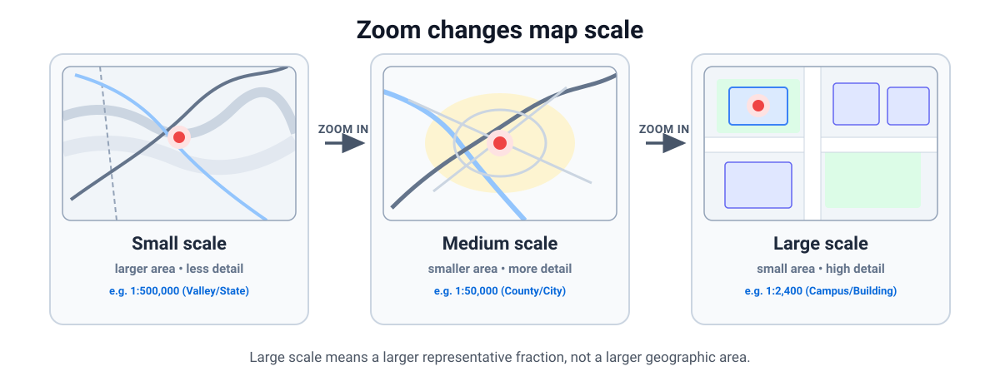
Course graphic and deterministic interaction for IA 342. The scenes are schematic; the scale relationship is the teaching focus.
Interactive Exploration
11b — Interactive Map Scale Explorer
Try it: Choose a scale level to step through four extents: Shenandoah Valley, Harrisonburg and Rockingham County, JMU campus area, and building level. Notice how representative fractions and geometric details shift.
Cartographic Elements
12 — Three Ways to Express Scale
Map scale may be written as: a word statement (such as “one inch equals one mile”), a representative fraction (such as 1:63,360), or a graphic scale bar.
When a map is enlarged or reduced, the graphic scale changes with the map. A word statement and representative fraction are correct only at the intended output size.
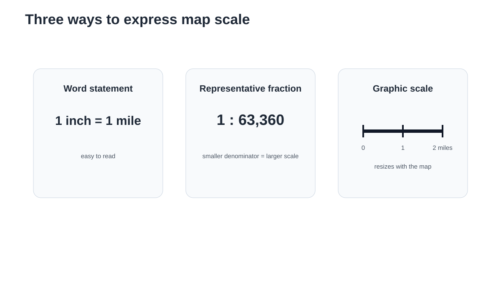
Course graphic for IA 342. Conversion used: 1 mile = 63,360 inches. See also USGS — Map Scales.
Color & Semantics
13 — Correct Data Can Still Use a Poor Color Encoding
The instructor’s source lecture begins classification with a Bureau of Labor Statistics unemployment map. The variable is ordered from lower to higher, but the original design uses several unrelated hues.
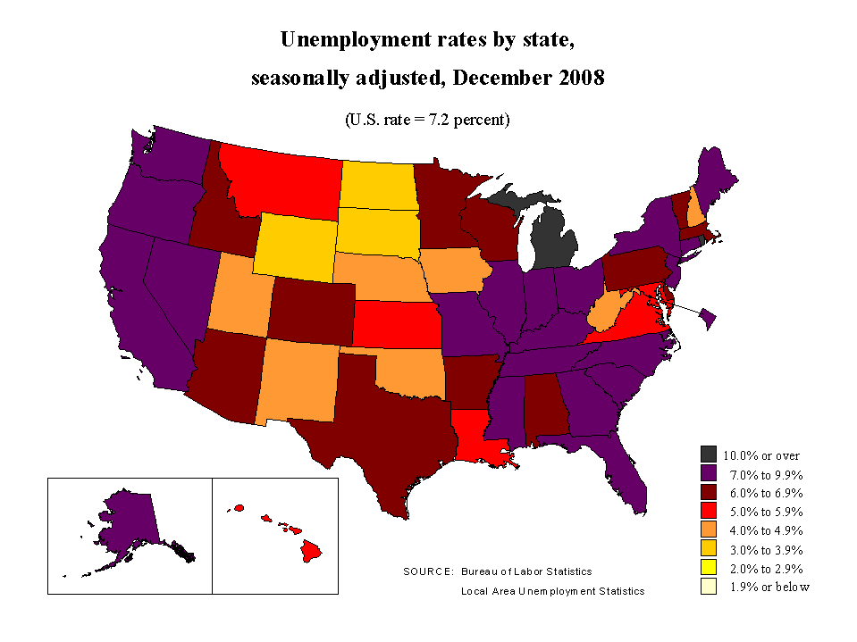
Class question: Which color looks “higher”—red, purple, or black? Why should the reader have to guess? Reference: U.S. Bureau of Labor Statistics, state unemployment rates, December 2008. Teaching critique/redesign by Jeffrey A. Shaffer, reproduced in the instructor-provided Lecture 5; that slide cites The Big Book of Dashboards, p. 15. BLS source page.
Visual Encodings
14 — Match the Color Scheme to the Data and Task
Five common uses of color are:
Sequential: lower to higher,
Diverging: two directions around a meaningful midpoint,
Categorical: separate unordered groups,
Highlight: emphasize one item against quiet context,
Alert: call attention to a condition that needs action.
Week 4 will cover color theory and accessibility in greater depth.
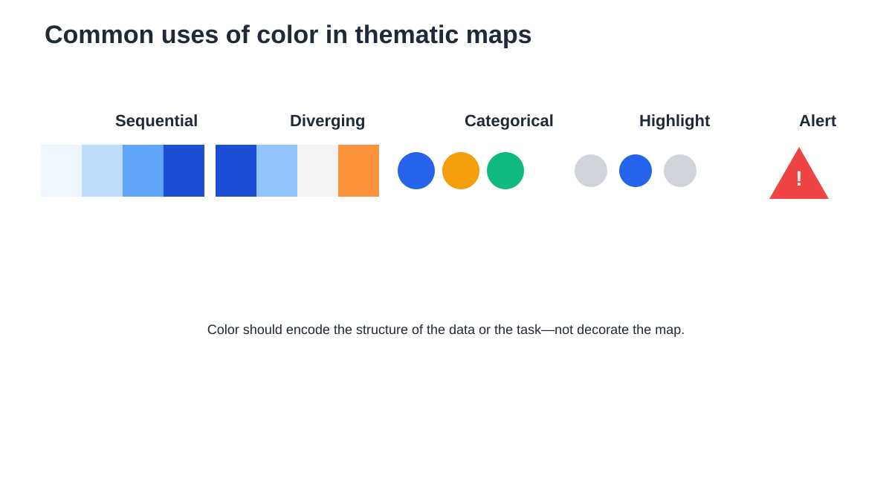
Course graphic for IA 342. Palette concepts based on ColorBrewer and the color discussion in the instructor-provided Lecture 5.
Design Discipline
15 — A Sequential Ramp Makes Order Visible
For one ordered variable, a light-to-dark sequential ramp gives the reader a natural direction: lighter = lower; darker = higher.
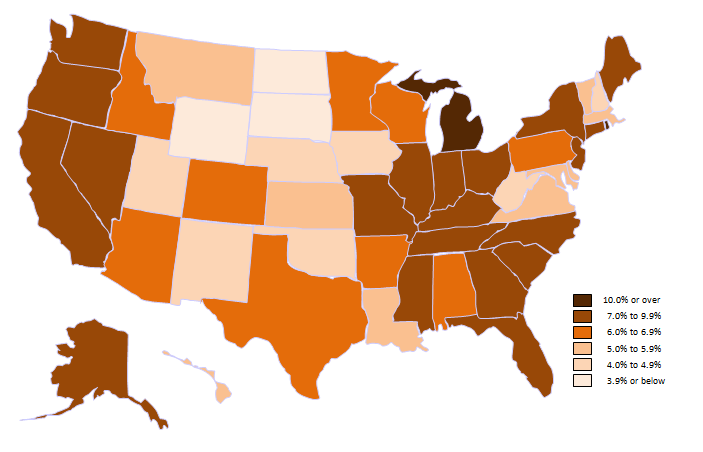
Reference: U.S. Bureau of Labor Statistics, state unemployment rates, December 2008; redesign reproduced from the instructor-provided Lecture 5, credited there to Jeffrey A. Shaffer. BLS source page.
Accessible Palette
16 — Grayscale Can Also Show Order
A map does not always need hue. Lightness alone can encode a lower-to-higher sequence.
Grayscale can be useful when: the map will be printed in black and white, color is not central to the message, or the map should remain a quiet background layer.
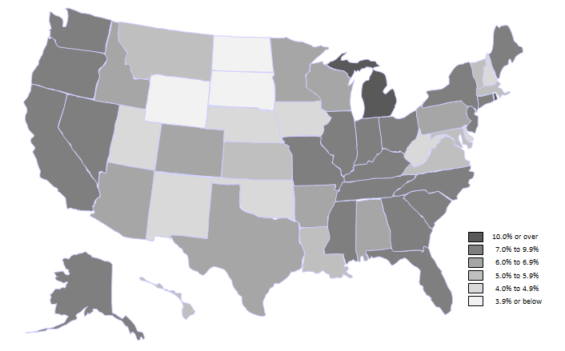
Reference: U.S. Bureau of Labor Statistics, state unemployment rates, December 2008; redesign reproduced from the instructor-provided Lecture 5, credited there to Jeffrey A. Shaffer. BLS source page.
Comparative Analysis
17 — Same Data, Three Color Choices
The state values and geography are identical in all three maps. Only the color encoding changes.
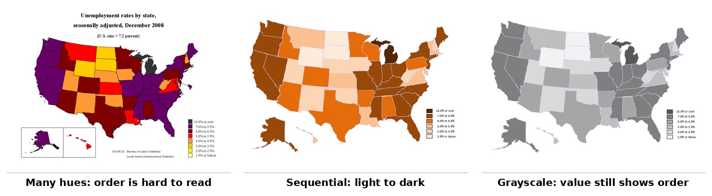
Teaching point: Color is part of the analytical encoding. It changes how quickly and accurately the reader can identify order. Reference: U.S. Bureau of Labor Statistics, state unemployment rates, December 2008; redesign reproduced from the instructor-provided Lecture 5, credited there to Jeffrey A. Shaffer. BLS source page.
Cognitive Traps
18 — Different Class Breaks Can Create a False Comparison
The instructor's source lecture compares Bureau of Labor Statistics unemployment maps for December 2008 and October 2011. The maps use similar colors, but their numeric ranges are different.
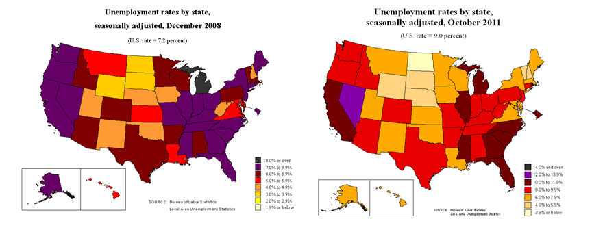
The problem is not that either dataset is wrong. The problem is that the same-looking color does not mean the same unemployment rate in both maps. That can create a false visual comparison. Analyst habit: Before comparing two maps, compare their legends. References: U.S. Bureau of Labor Statistics, December 2008 and October 2011. Teaching comparison reproduced from the instructor-provided Lecture 5, credited there to Jeffrey A. Shaffer.
Legend Integrity
19 — Read the Legends Before You Compare the Maps
The side-by-side legends make the problem visible immediately.
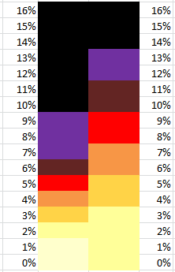
For a valid visual comparison across time or place, keep these consistent when possible: variable definition, geography, class breaks, color direction, and legend labels. If the class breaks change, say so clearly and do not treat matching colors as matching values.
References: U.S. Bureau of Labor Statistics, December 2008 and October 2011. Legend comparison reproduced from the instructor-provided Lecture 5, credited there to Jeffrey A. Shaffer.
Data Classification
20 — Why Classification Matters
Many thematic maps turn continuous numbers into a small number of color classes.
Classification is the rule used to place values into those classes.
The data do not change. The class breaks change which areas look similar and which differences stand out.
We will first use the same 14 values from the instructor’s source lecture:
Source: instructor-provided Lecture 5, slides 19–25; those slides credit Dr. Zachary Jared Bortolot.
Classification Methods
21 — Equal Interval
Equal interval divides the full numeric range into classes of equal width.
It is useful when fixed numeric ranges matter and the reader should compare classes to a known scale.
A weakness is that uneven data may produce crowded low classes and nearly empty high classes.
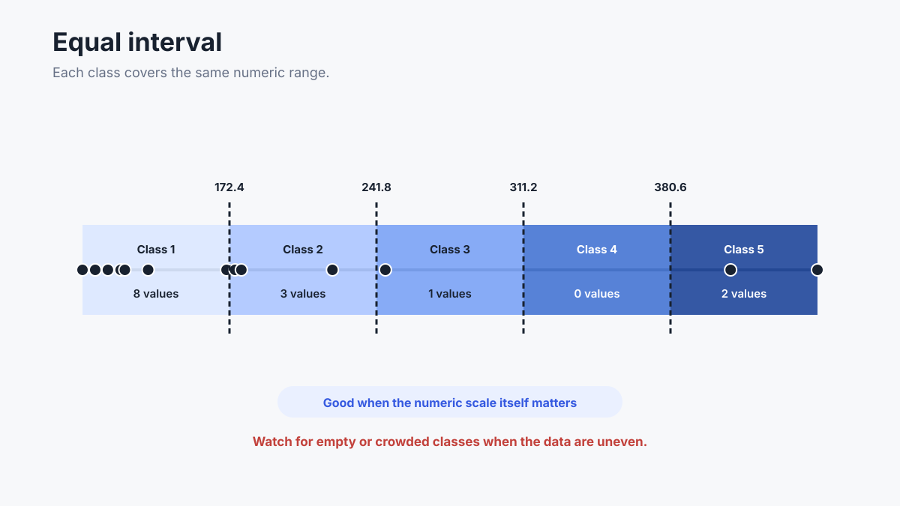
Course graphic for IA 342, based on the values and method in the instructor-provided Lecture 5.
Classification Methods
22 — Quantile
Quantile places about the same number of geographic areas in each class.
It is useful for showing relative rank: lower group, middle group, and higher group.
A weakness is that nearly equal values can be split into different classes, and very different values can be placed in the same class.
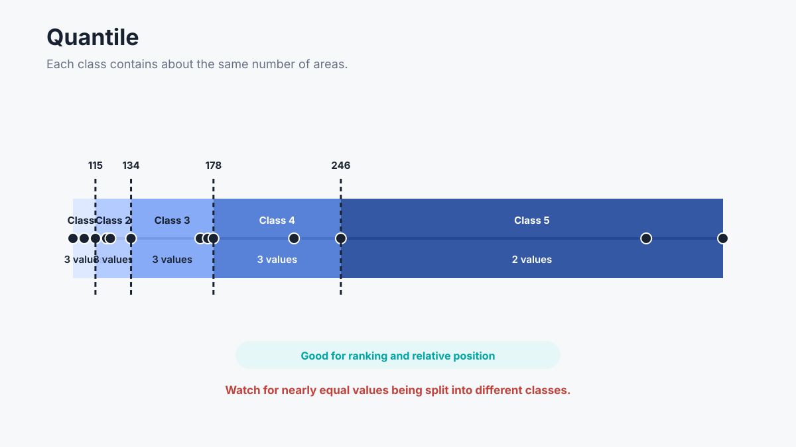
Course graphic for IA 342, based on the values and method in the instructor-provided Lecture 5.
Classification Methods
23 — Natural Breaks
Natural breaks, often called Jenks natural breaks, places class boundaries near large gaps in the data.
It is useful for showing clusters that are specific to one dataset.
A weakness is that the breaks may change when the data change. Two maps classified independently may therefore be hard to compare.
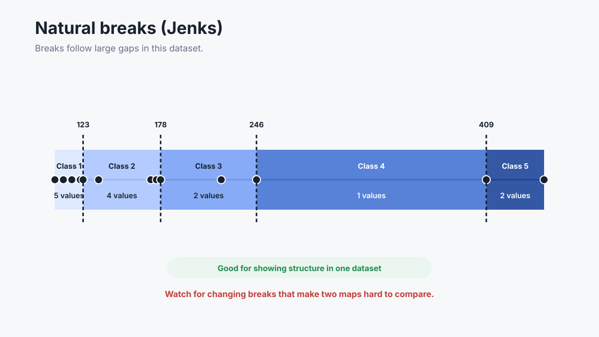
Course graphic for IA 342, based on the values and method in the instructor-provided Lecture 5.
Classification Methods
24 — Standard Deviation
Standard deviation describes how far values are from the mean, or average.
A standard-deviation map emphasizes: areas near the average, areas above the average, and areas below the average.
This method is useful when distance from a benchmark is the main question.
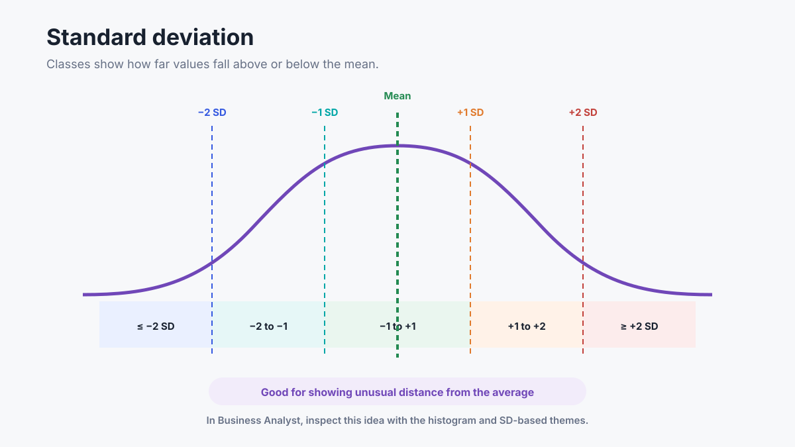
Course graphic for IA 342, based on the method in the instructor-provided Lecture 5.
Real-World Evidence
25 — Real Map Example: Classification Changes What Stands Out
The maps below use the same geographic units and the same underlying variable, but different classification methods.
Look closely: Which areas move into or out of the darkest class? Which method creates classes with similar numbers of areas? Which method follows gaps in the data? Does the map that looks most balanced necessarily answer the analytical question best? Source: University of Minnesota open textbook, Mapping, Society, and Technology, Chapter 7, Figure 22. Licensed CC BY-NC-SA 4.0. Source page.
Interactive Simulation
26 — Interactive Classification Comparison
Use the buttons to switch among four methods while the data and state shapes remain fixed.
Ask: Which states change class? How do the legend ranges change? Which method best supports a ranking question? Which method best shows clusters in this one dataset? Which method is easiest to compare across years? Data source: U.S. Bureau of Labor Statistics, Local Area Unemployment Statistics — December 2008. Deterministic course interaction for IA 342.
Analyst Checklist
27 — Classification Decision Checklist
Before accepting the software default, check:
the shape of the data distribution,
unusual high or low values,
how many areas fall in each class,
whether maps must be compared across time or place,
whether the class labels are meaningful to the audience, and
whether the selected method supports the actual question.
The software computes the breaks. The analyst is responsible for the choice.
Map Composition
28 — Map Elements Have Specific Jobs
A complete map may include: title, mapped body, legend, scale, direction or graticule, labels, inset or location map, data source and date, and explanatory notes.
Each element should help the reader understand the topic, decode the symbols, orient to place, measure distance, or verify the evidence.
Source concept: Torguson, Cartography: Thematic Map Design, as summarized in the instructor-provided Lecture 5, slides 27–30.
Real-World Layout
29 — Real Map Example: Map Body and Marginal Information
A topographic map shows how many elements work together in one real product: mapped features, labels, terrain, roads, water, a title area, legend information, scale, coordinate reference, and source notes.
The example below combines a clear title, map body, legend, location inset, scale bar, north arrow, label, and source-note position.
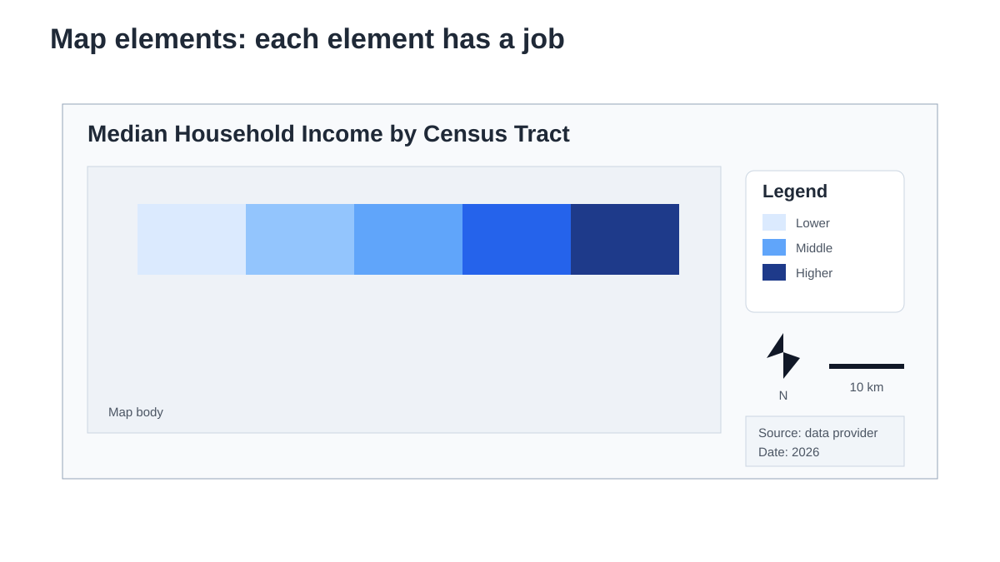
Question: Which elements help decode the data, which orient the reader, and which support verification? Course graphic for IA 342. Element list adapted from Torguson and the instructor-provided Lecture 5.
Perceptual Hierarchy
33 — Visual Hierarchy: What Should the Reader Notice First?
The two panels contain the same schematic layers. Only the visual emphasis changes.
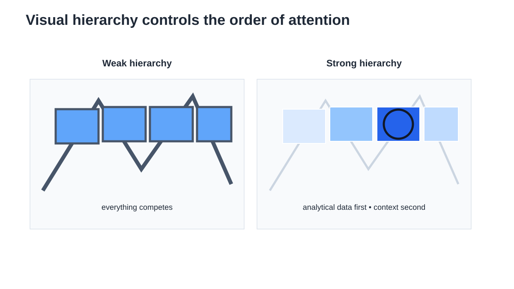
A useful hierarchy is: 1. analytical data, 2. study area and essential labels, 3. background context. The basemap should support the analysis—not compete with it.
Course graphic for IA 342.
Thematic Typology
34 — Six Thematic Map Types
This course focuses on six common thematic map types: choropleth, dot density / dot distribution, proportional symbol, isarithmic, cartogram, and flow map.
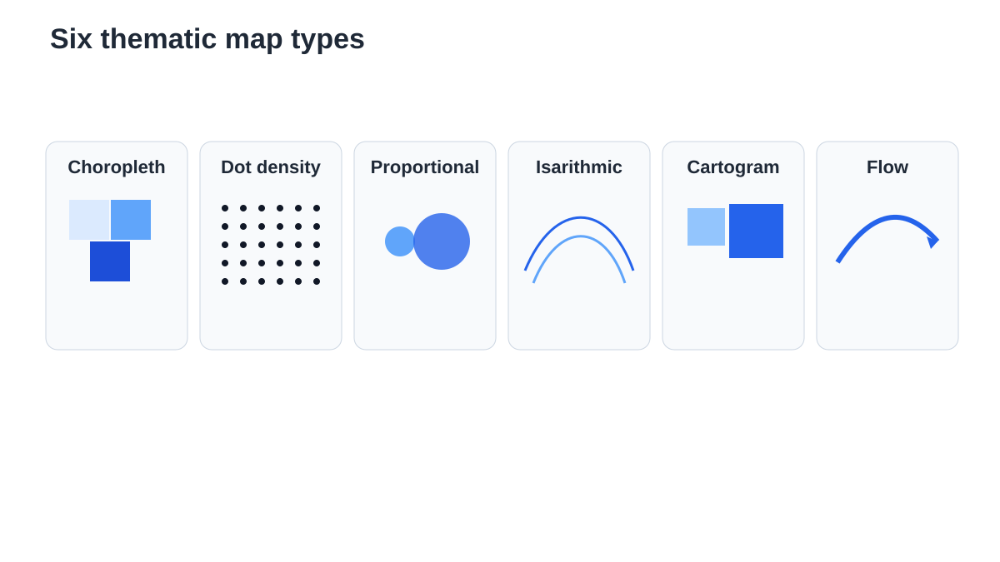
The next six screens use real public-data examples. Course overview graphic for IA 342; map-type sequence follows the instructor-provided Lecture 5.
Thematic Map Types
35 — Choropleth Map: Use a Relative Value by Area
A choropleth map fills geographic areas with color based on a value.
It should normally use a rate, ratio, percentage, density, index, or another value that has been normalized for meaningful comparison.
Do not color states by raw population totals. Large or populous areas would dominate partly because of how much area or population they contain. Use proportional symbols for totals.
Here, the value is the percentage of the labor force that is unemployed, so states can be compared using a common relative measure. Reference: U.S. Bureau of Labor Statistics, state unemployment rates, December 2008; redesign reproduced from the instructor-provided Lecture 5, credited there to Jeffrey A. Shaffer. BLS source page.
Thematic Map Types
36 — Dot-Density / Dot-Distribution Map
A dot map shows the distribution or concentration of many observations. In a dot-density map, one dot may represent a fixed number of people or events rather than one exact point location.
A proportional symbol map uses symbol size to represent a numeric total. The Census map below uses circles to show total resident population. This is a better encoding for population totals than filling each state with color.
Important design points: symbol area should grow with the value, the size legend must be clear, overlapping symbols may need transparency or careful placement, and exact values can be added through labels or tooltips.
An isarithmic map uses isolines or bands to connect places with the same value. It is appropriate for phenomena that vary continuously across space, such as elevation, air pressure, temperature, precipitation, or earthquake intensity.
The USGS example uses isoseismal contours to show areas of similar reported earthquake intensity. Source: U.S. Geological Survey — Isoseismal Map, public domain. The USGS credits Stover and Coffman, Seismicity of the United States, 1568–1989.
Thematic Map Types
39 — Cartogram: Resize Geography by a Value
A cartogram changes the size or shape of geographic units so that area represents a statistic rather than land area.
A flow map shows movement between places. Direction is usually shown with arrows, while line width or color may represent volume, speed, or type of movement.
In this NOAA example, colored paths and arrows show major components of global ocean circulation. Key design questions are: Where does the flow begin and end? What does line width or color mean? Are arrows and overlapping routes still readable? Is geographic accuracy or route clarity more important for the task?
Where is a rate, ratio, percentage, or density higher or lower by area?
Choropleth
Color by area
Where are many observations concentrated?
Dot density / dot distribution
Dots
Where are the largest totals?
Proportional symbol
Symbol size
How does a continuous surface vary?
Isarithmic
Isolines or bands
What would geography look like if area represented a value?
Cartogram
Resized area
How do people, goods, water, or information move?
Flow map
Direction and line width
Start with the question and the type of value—not with the software menu.
Data Storytelling
42 — Real StoryMap Example: Evidence in Sequence
A StoryMap combines maps, charts, images, and short explanations in a guided sequence.
Open the full USGS StoryMap As you review it, ask: How does the title establish the analytical question? How are maps and charts placed next to explanatory text? How does the sequence move from context to evidence to interpretation? Where does the story acknowledge variation or limits instead of making one simple claim? Source: U.S. Geological Survey — Colorado River Basin drought and the 2023 water year, public domain.
Lab 3 Preview
43 — Week 3 Lab: Build One Public Spatial Story
In the lab, you will continue the same ArcGIS Business Analyst project from Week 2 and create: an income choropleth map, a population proportional-symbol map, a Smart Map Search result, a grocery point-of-interest search, a JMU-area infographic, and one short published StoryMap.
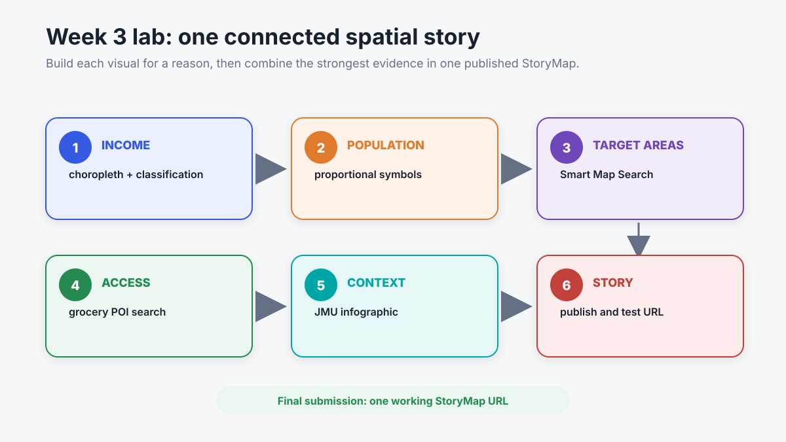
Your StoryMap, web map, and every related web layer used in the story must be shared publicly and tested in a private/incognito browser window before submission. Course workflow graphic for IA 342.
Lecture Summary
44 — Main Takeaways
Maps connect evidence through location and spatial relationships.
A map can use correct data while design choices make one pattern more prominent.
Coordinates and coordinate systems determine how locations are represented and measured.
Projection and scale affect what a map can show.
Color and classification change the visual story.
Choropleth maps normally require a relative or normalized value; proportional symbols are better for totals.
Each map image should identify its source, date, units, and important limits.
A StoryMap should connect a question, spatial evidence, context, and a careful interpretation.
Scholarly Sources
45 — References and Media Sources
Primary course source:
Instructor-provided lec5.pptx, Map Design, February 16, 2026. The coordinate-system, classification, map-element, scale, and thematic-map sequence in this lecture follows that deck. The source deck cites Torguson, Jeffrey A. Shaffer, Dr. Zachary Jared Bortolot, and the individual examples listed on its slides. Tableau-specific instruction from the latter part of the deck is intentionally excluded.
ArcGIS Business Analyst II: Thematic Maps, Report, and StoryMap
Put cartographic principles into practice: build an income choropleth, population proportional symbols, a Smart Map Search, a grocery POI layer, and assemble your published StoryMap.
 NASA Blue Marble: a true-color composite of Earth observations.
NASA Blue Marble: a true-color composite of Earth observations.
 NASA geoid visualization: Height variation is exaggerated so that it can be seen.
NASA geoid visualization: Height variation is exaggerated so that it can be seen.